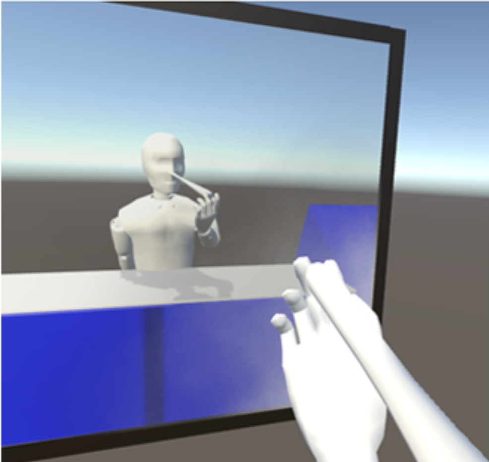
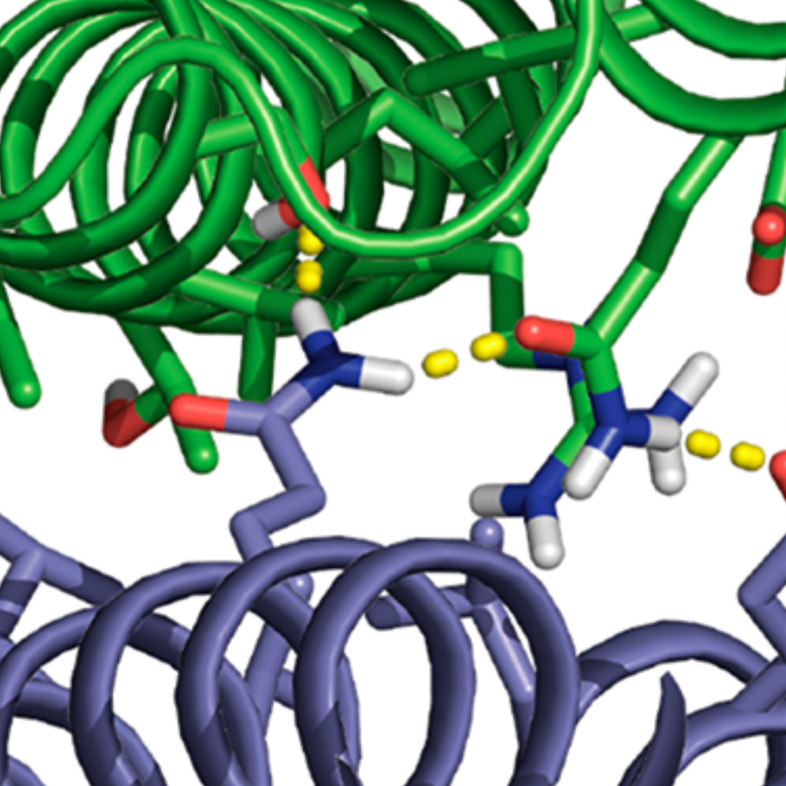

Publications
19 total = 10 conferences + 6 journals + 3 under review / arXiv preprints
ongoing...
-
[19] Enhanced arm reach after a Pinocchio illusion in Virtual Reality
Mar Gonzalez-Franco, Baihan Lin, Christopher Berger, and Jaron Lanier
under review
2019
-
[18] Reinforcement Learning Models of Human Behavior: Reward Processing in Mental Disorders
-
[17] What About Higher-Order Cellular Complexity? An Inquiry with Topological Simplicial Analysis
 Baihan Lin, Raul Rabadan, Nikolaus Kriegeskorte
Baihan Lin, Raul Rabadan, Nikolaus Kriegeskorte
NIPS 2019 Workshop on Learning Meaningful Representations of Life (LMRL)
-
[16] Influence of Ocular Dominance Columns and Patchy Callosal Connections on Binocularity in Lateral Striate Cortex: Long Evans vs. Albino Rats
-
[15] Modeling Neurological and Psychiatric Disorders with Reward Biased Reinforcement Learning Models
-
[14] Visualizing Representational Dynamics with Multidimensional Scaling Alignment
-
[13] Cliques of single-cell RNA-seq profiles reveal insights into cell ecology during development and differentiation
-
[12] Self-assembling 2d arrays with de novo protein building blocks
Zibo Chen, Matthew Johnson, Jiajun Chen, Matthew Bick, Scott Boyken, Baihan Lin, James DeYoreo, Justin Kollman, David Baker, and Frank DiMaio
Journal of the American Chemical Society
[pdf] [JACS cover story] [bibTex] -
[11] Split Q Learning: Reinforcement Learning with Two-Stream Rewards
-
[10] Neural Networks as Model Selection with Incremental MDL Normalization

2018
-
[9] Adaptive Independence Tests with Geo-Topological Transformation
-
[8] Adaptive Representation Selection in Contextual Bandit with Unlabeled History
-
[7] Contextual Bandit with Adaptive Feature Extraction

2017
-
[6] Parkinson’s disease digital biomarker discovery with optimized transitions and inferred markov emissions
-
[5] Dynamic Forecasting of Zika Epidemics Using Google Trends
-
[4] Model-informed risk assessment for Zika virus outbreaks in the Asia-Pacific regions
-
[3] An Integrative Analysis Reveals a Central Role of P53 Activation via MDM2 in Zika Virus Infection Induced Cell Death


2016
-
[2] Ocular Dominance Columns in Rat Visual Cortex: a Quantitative Model to Analyze Deprivation-Induced Cortical Plasticity
2015
-
[1] Systematic Genome-wide Screening and Prediction of microRNAs in EBOV During the 2014 Ebolavirus Outbreak